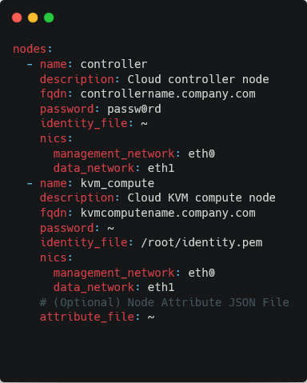

This was my first co-op term, started at the end of my 2nd year. I went into this work term excited to be working on production code that has a real-world impact, but also a bit apprehensive as I had never worked on a project of this scope and size before.
The position advertised Java as a primary language needed for the role. Java formed the backbone of the application being developed and ran the test suites; the majority of my work was done in a domain-specific language (DSL) based on YAML files.
Testing was done using Cucumber: a testing framework that connects test functions to statements written in regular English.
Cucumber test statements were connected to Java functions that performed the tests.
Databases such as Cassandra, Redis and Elasticsearch were used to store application data.
Working in a domain-specific language has its own set of challenges different from those found in more widespread languages. Documentation and implementation are limited to homegrown examples; you can't 'Google' a solution to a problem and expect to find a comprehensive answer.
This is still a work in progress...